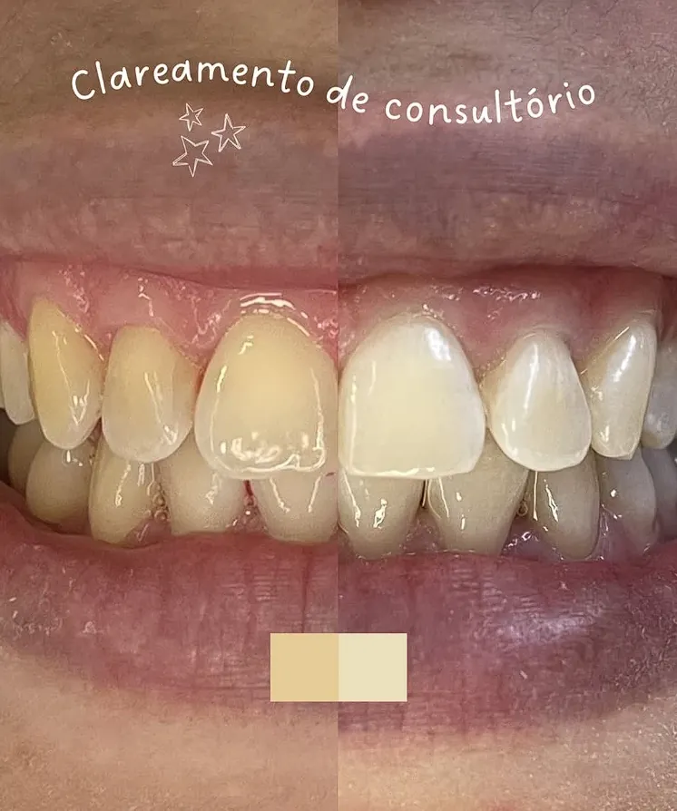
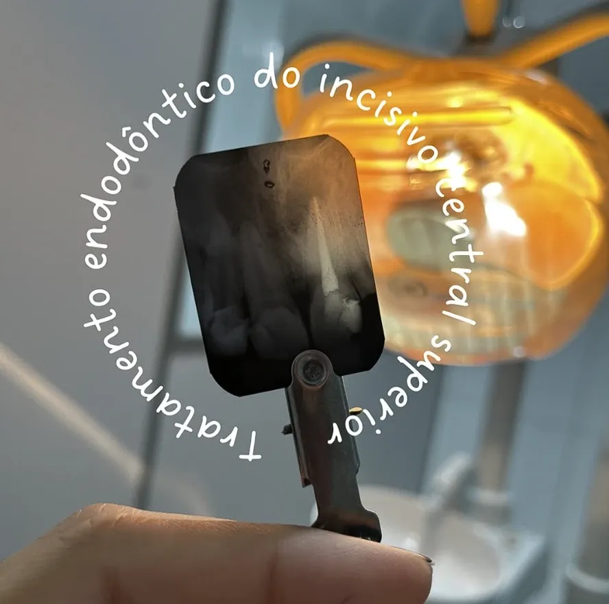
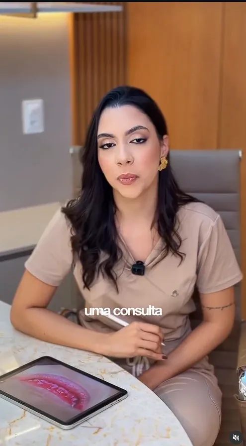
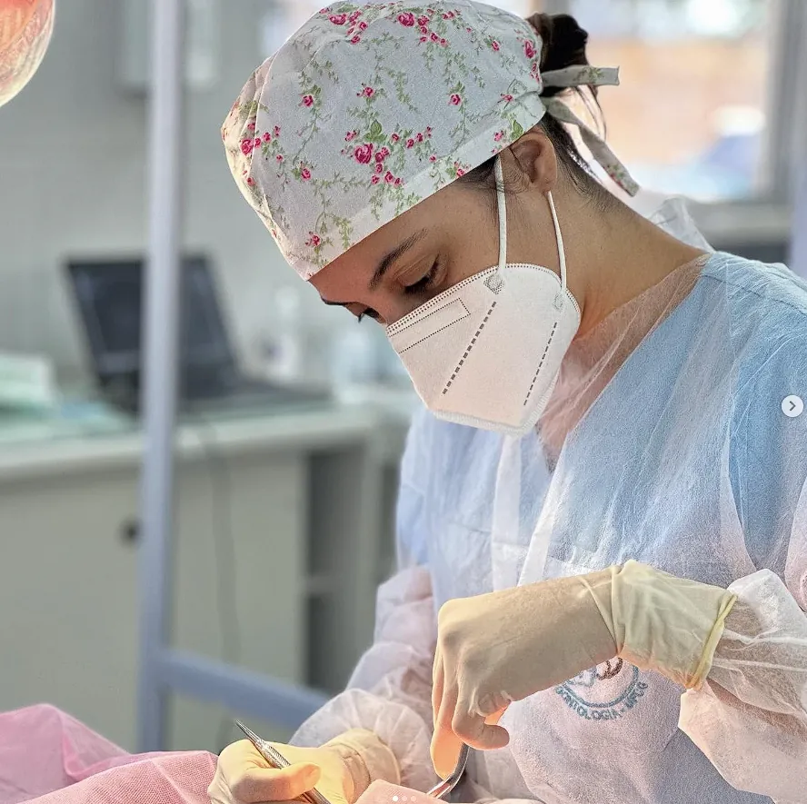
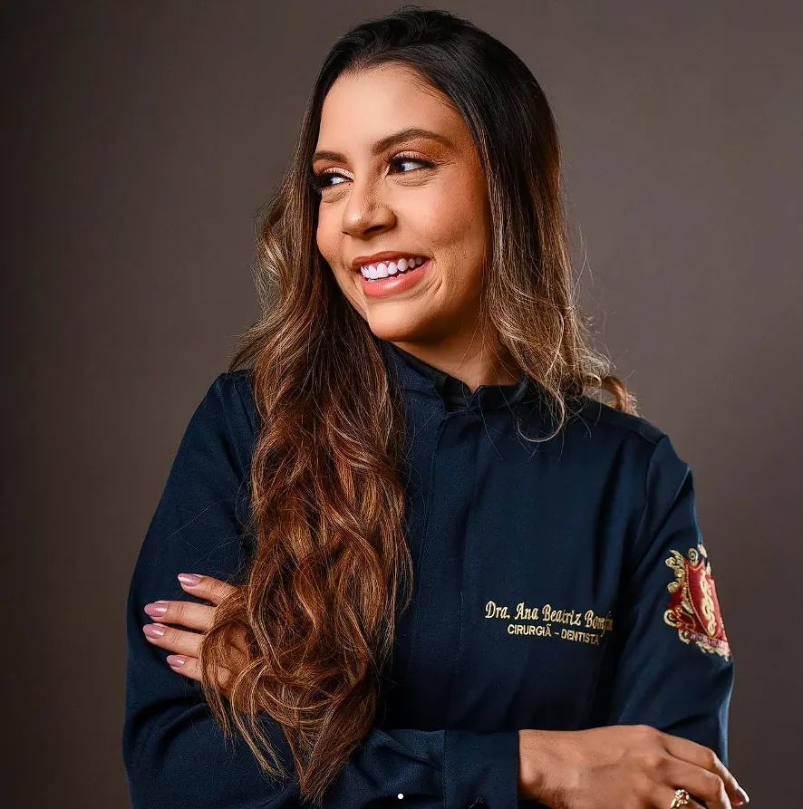
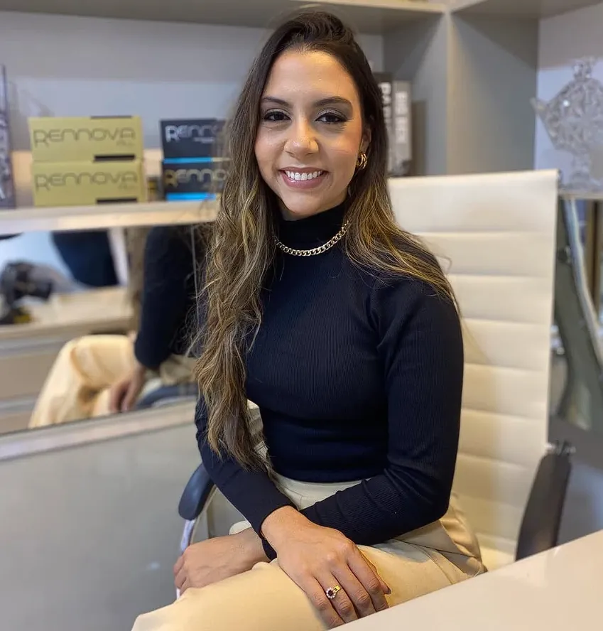

01Clareamento de consultório
Sessões acompanhadas, evolução progressiva da cor e protocolo pensado para o seu conforto.
Resultado natural, sem exageros.Clínica geral, endodontia, cirurgias e urgências, com técnica, planejamento individual e conforto em cada etapa.
Acredito que todo tratamento começa com uma boa conversa. Explicar cada etapa, respeitar o seu tempo e cuidar do seu sorriso com técnica e delicadeza. É assim que eu gosto de atender.

01Sessões acompanhadas, evolução progressiva da cor e protocolo pensado para o seu conforto.
Resultado natural, sem exageros.
02Dor latejante, sensibilidade prolongada ou "bolinha" na gengiva? Eliminar a infecção e preservar o dente.
Quanto antes, mais tranquilo.
03Evidenciação de placa bacteriana para mostrar onde a escovação precisa de atenção.
Prevenir é sempre mais simples.Devolvendo forma, função e estética ao dente com materiais e técnica atuais.
Clínica geral e restauradora.
05Atendimento para quando não dá para esperar, com acolhimento e segurança.
Adultos e crianças.Ilustração meramente demonstrativa. O resultado varia de pessoa para pessoa e depende de avaliação individual.
A mensagem ao lado se monta sozinha. Uma avaliação identifica a causa e indica o tratamento adequado.
Conta o que está sentindo e escolhemos o melhor horário.
Escuta atenta, exame clínico e explicação clara, sem termos difíceis.
Você entende cada etapa, o tempo e o cuidado necessário antes de começar.
Conforto durante e retorno combinado depois. Prevenir é mais simples que tratar.

Cirurgiã-dentista em Fortaleza, atuo com odontologia preventiva e restauradora, endodontia, cirurgias e urgências, do sorriso infantil ao adulto. Acredito em explicar cada passo e em tratamentos que respeitam a naturalidade de quem senta na cadeira.
Consultório em torre empresarial com recepção, estacionamento e fácil acesso, no bairro mais central de Fortaleza.

Cada caso é avaliado individualmente. O protocolo em consultório é planejado para o máximo de conforto possível.
É feito com anestesia e o objetivo é justamente eliminar a dor e a infecção. Quanto antes o diagnóstico, mais tranquilo o tratamento.
Sim, atendimento adulto e infantil.
Sim. Chame no WhatsApp contando o que está sentindo para encontrarmos o primeiro horário possível.
Pelo WhatsApp desta página. Respondemos e combinamos o melhor horário.
Agende sua avaliação e descubra como alcançar um sorriso mais iluminado.
Chamar no WhatsApp→